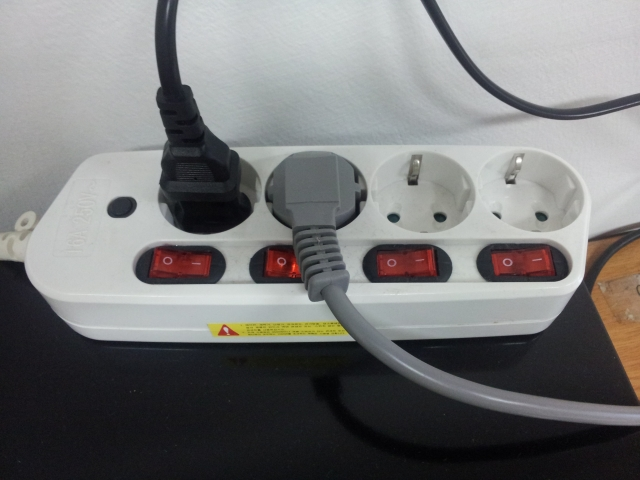

韓国のコンセント
はじめに
所用で韓国に渡航する機会がありましたので，韓国に関するアレコレを紹介したいと思います．
ノートPCや携帯電話，デジタルカメラなどの電化製品を持ち込んだのですが， 意外と忘れがちで忘れると致命的なのはコンセントの形状と電圧が異なることではないでしょうか． 本ページでは，現地で撮影してきたコンセントの写真を掲載します． 韓国に渡航される際の参考になれば幸いです．
電圧とコンセントの形状
電圧は220Vです． コンセントの形状は日本と大きく異なり，主にSEタイプまたはCタイプが使用されています． SEタイプとCタイプは一見するとほとんど同じ形状で，多くのコンセントプラグは互換性が確保されています． 日本人客が利用するホテルでは日本と同じ電圧・形状のコンセントが備え付けられている場合もあるそうです． しかし，私は大学の学生寮に滞在したためホテルを利用しませんでしたので，実際はどうなのか知りません．
| 電圧 | 220V |
|---|---|
| コンセント形状 | SEタイプ，Cタイプ |
具体例
壁に備え付けられたコンセント
室内の壁に備え付けられたコンセントです．これはCタイプだと思います．
{kind=link}
テーブルタップ
テーブルタップです．これはSEタイプではないかと推測しています． コンセント1個あたりの外形が大きいので，日本のテーブルタップほどコンパクトに作ることはできない感じです．
{kind=link}
スイッチ付のテーブルタップです．おそらくCタイプです．日本でもPC周辺でよく見かけますね． わかりにくいですが，左端のコンセントプラグは，日本から持ち込んだノートPCのACアダプタを以降で紹介するような変換プラグを介して接続しているものです．
{kind=link}
日本の電化製品を使うには
変換プラグで対応できる場合
ノートPC，携帯電話やデジタルカメラに付属しているACアダプタの大半はスイッチング式で，一般に100Vから240Vまでの入力に対応しています． つまり，コンセントの形状さえ合わせてしまえば，世界のほとんどの国と地域で使用可能なのです． ACアダプタの仕様例と，コンセント形状を合わせるための変換プラグの例を示します．

変換プラグの製品例としては下記のようなものが最も一般的だと思います．
変換プラグには様々なコンセント形状に可変して対応可能なマルチタイプも存在します．
変換プラグで対応できない場合
電気カミソリなどには，日本国内専用のトランス式ACアダプタが付属していることが多いです． これらは変換プラグでコンセントの形状を合わせただけでは使用できません． 変圧器が必要になります．